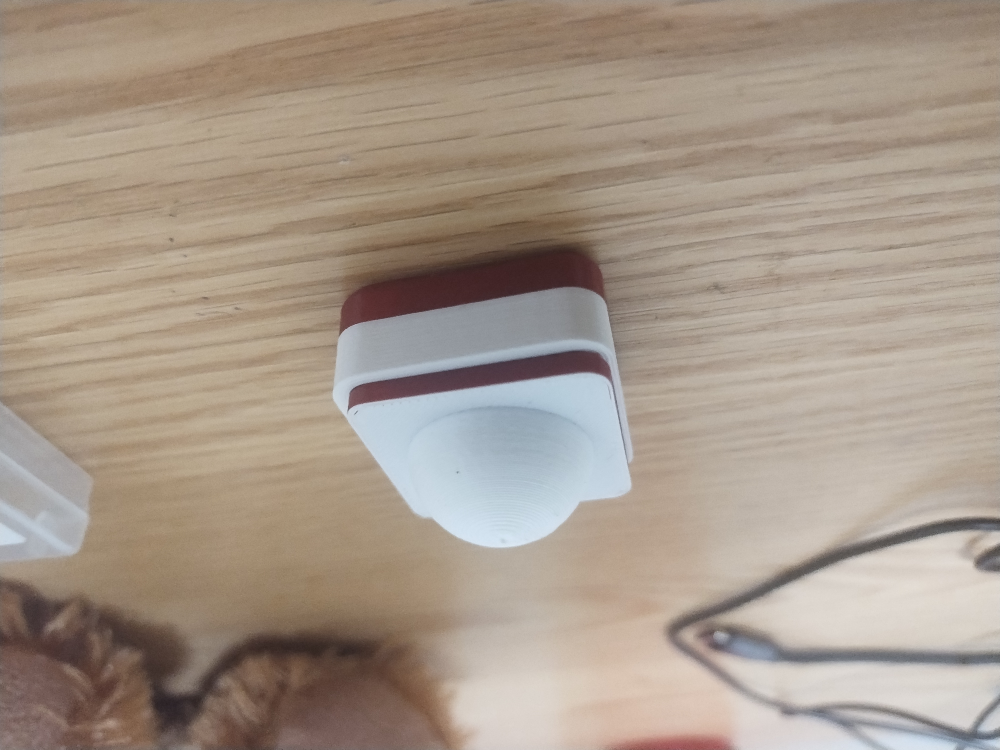
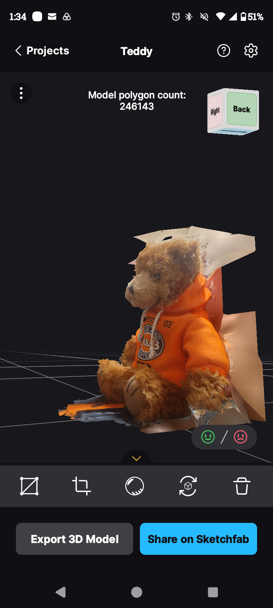
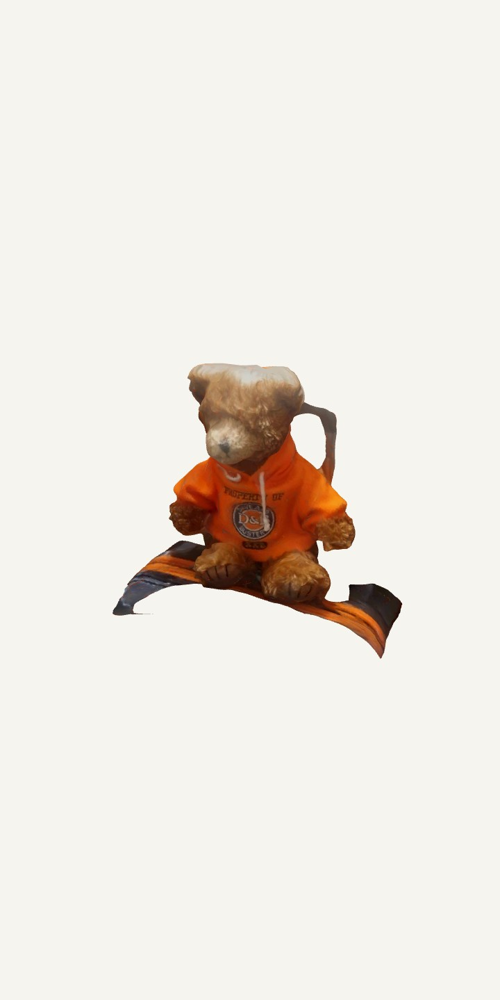
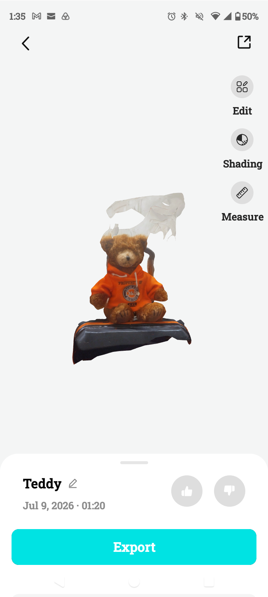
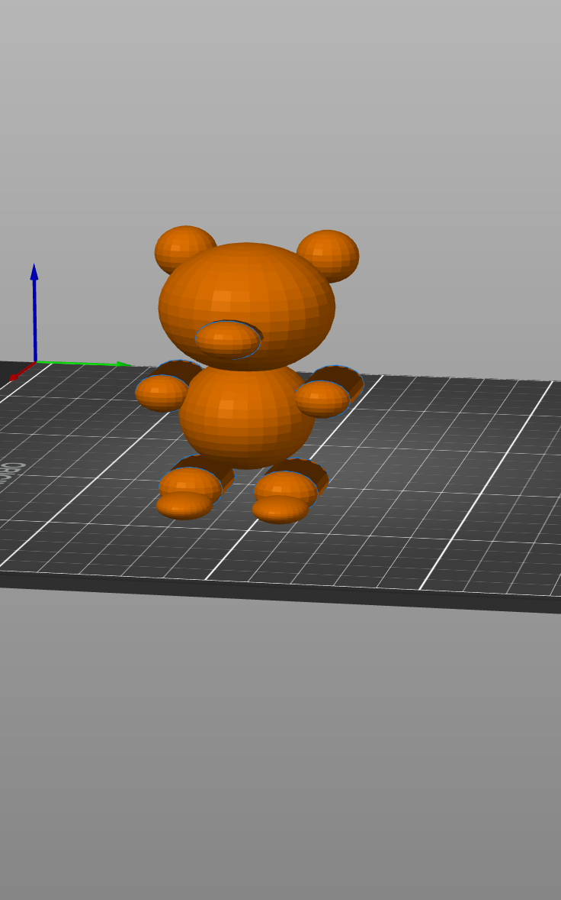
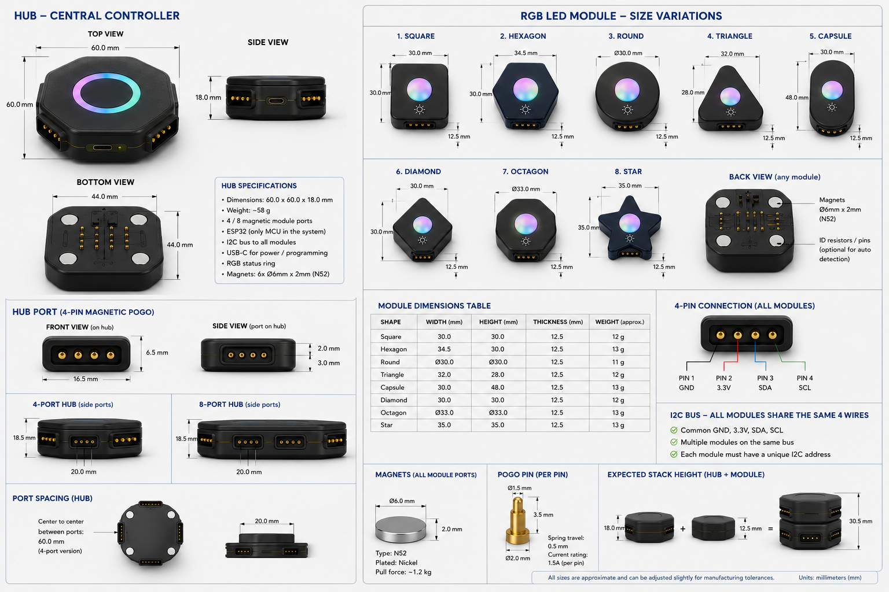

On this page
Week Documentation • Digital Fabrication
3D Printing & Photogrammetry
This week focused on creating a physical component for my final project while exploring different methods of digital capture through photogrammetry. I designed and printed a modular LED component using opaque and semi-transparent plastics, then compared multiple photogrammetry workflows by scanning the same object using RealityScan, Polycam, Kiri Engine, and a ChatGPT-assisted workflow.

Concept design for the modular LED component. The goal was to create a physical module that could become part of the larger Inventa robotic ecosystem.
Fabrication
3D Printed LED Module
For this assignment I designed a physical component that could contribute to my final project. I created a modular LED housing designed to demonstrate how physical components can attach together as part of a larger robotic system.
The design focuses on controlling light diffusion through material selection. The outer shell uses opaque plastic while the light-diffusing section uses semi-transparent material to create a soft illuminated appearance.
This component also allowed me to test the physical dimensions and design language that will eventually be used throughout the modular robot platform.

Printed LED enclosure prototype showing the interaction between transparent and opaque materials.
Fabrication Output
Design Files
Digital Reconstruction
Photogrammetry Experiment
To explore photogrammetry workflows, I captured 64 images of a teddy bear from multiple angles and used the same source images across several applications.
The purpose of this experiment was to compare how different software approaches reconstruct geometry, generate textures, and handle imperfect real-world scanning conditions.

I took over 200 photos to get all the pictures necessary for the photogrammetry software to do work well enough to produce the following outcomes. Here are some of them
Results
Photogrammetry Comparison

RealityScan
Mobile focused workflow with fast reconstruction and strong texture generation.

Polycam
Compared for mesh quality, ease of use, and scanning speed.

Kiri Engine
Evaluated for reconstruction accuracy and final model detail.

ChatGPT Workflow
Used as an experimental comparison for AI-assisted analysis.
Final Project
Modular Robotics Platform
The final project is a modular robotic platform centered around a main hub. The hub acts as the central controller and allows different modules to be attached through magnetic pogo-pin connectors.
Modules communicate through a shared I2C bus, allowing sensors, motors, lighting systems, and controllers to become interchangeable components.

Concept architecture showing the hub acting as the center of the modular ecosystem.
Planning
Bill of Materials
Schedule
Next Three Weeks
Week 1 — Hardware Foundation + Software Architecture
Establish the core architecture of Inventa by completing the hub, module connection system, and the foundation of the software stack.
- Finalize hub enclosure design and physical dimensions
- Complete pogo pin + magnetic connector layout
- Finalize module communication system using I2C bus
- Create first prototype of the main hub
- Test power delivery between hub and modules
- Set up ESP32 XIAO C3 development environment
- Create base firmware for module detection and communication
- Create software architecture for sensors, outputs, and movement
- Design initial data structure for sensor readings
- Create first version of the Inventa control interface
Week 2 — Module Integration + Robot Intelligence
Connect the physical modules together and develop the software required for the robot to collect data and respond to its environment.
- Assemble wheel module and test motor control
- Integrate motor drivers with the hub controller
- Implement basic movement commands (forward, reverse, turn)
- Connect and test environmental sensors
- Implement temperature, distance, gas, and motion data collection
- Create unified sensor data communication protocol
- Build module identification system
- Create LED response behaviors based on sensor inputs
- Implement LCD display for live sensor information
- Test wireless communication between controller and robot
- Begin AI/data processing pipeline for interpreting sensor data
Week 3 — Final Assembly + Intelligence + Documentation
Transform the prototype into a complete MVP by finishing software, improving reliability, and preparing the final demonstration.
- Complete final physical assembly of the robot
- Finalize all module housings and 3D printed components
- Complete software for controlling all connected modules
- Create automated behaviors based on sensor input
- Implement camera/object recognition workflow
- Complete LCD interface and user feedback system
- Add speaker responses for robot interactions
- Test communication reliability across all modules
- Debug hardware failures and improve stability
- Capture final photos, videos, and documentation
- Complete BOM, timeline, and final project presentation